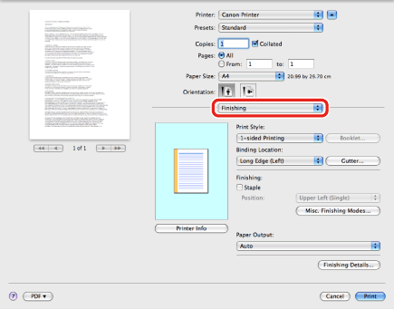
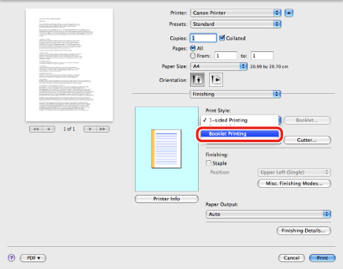

This option enables you to print two pages of the original on each side of a sheet, then fold them in half, so that the printouts are made into a booklet.
For example, if you print a 12 page document using the Booklet Printing option, original pages are printed on both sides of the sheet, then the resulting three sheets are printed out. With the Booklet Printing option, the pages are sorted and printed so that they are laid out in the correct order after outputting and folding.
|
NOTE
|
|
Depending on the printer model you are using, this option may not be available.
|
1.
From the [File] menu of the application software, select [Print].
The [Print] dialog box is displayed.
2.

The [Finishing] preferences pane is displayed.
3.
Select [Booklet Printing] from [Print Style].

4.
Specify detailed options for booklet printing.
5.
Click [Print] in the [Print] dialog box.